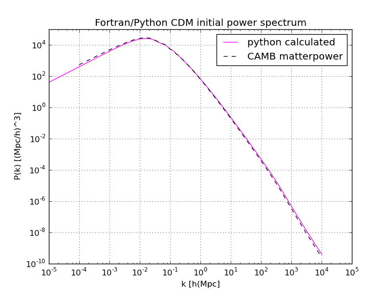

The initial condition saga
31/Jan 2012
If reading the previous posts on N-body simulations you have though that initial conditions are a little and easy task, you were wrong! And me with you!
The first things I have understood banging against them were:
Gadget requires initial conditions (ICs) generate by (for example) N-GenIC
N-GenIC requires an initial power spectrum from CMBFast that is no longer used
CMBeasy should substitute CMBFast but it doesn’t, it only works for CMB anisotropies
CAMB should substitute CMBFast
the CAMB interface is terrible and not very well documentated
CAMB
Let’s start with the
main CAMB interface.
If you, like me, need an initial power spectrum as input for your ICs generator
you are interested in just few options of the interface. First, you should select
“Transfer functions” from the “Actions to Perform” section. You can leave the
default selection on “Scalar Cl’s” and “Linear”. After that, check the
“Cosmological Parameters” section if it’s ok for you and maybe, leave the
default “Initial Scalar Perturbation Mode” that is “Adiabatic”. The last
things you should be interested in are the maximum $k$, for me it is $10^4$,
“k per logint” (it should be something like the k-sampling, for me, 50), the
number of redshift (1) and the (transfer) redshift (0). Now select between
“Interpolated Grid” or “Calculated Values” (this parameter switch between and
interpolated regular grid in log k or array at actual computed values that are
better for later re-interpolation, according with the CAMB README) and choose
if you want high precision computation. When you have finished you can click
on “Go!”. What you obtain is a page with some links to download:
camb_*.ini: the configuration file to run the standalone CAMB code on your owncamb_*.log: the calculation logcamb_*_scalcls.datcamb_*_scalcls.fitscamb_*_transfer_out_z0.dat: this is the file containing the transfer functions for CDM, baryon, photon, massless neutrino, massive neutrinos, and total (massive) respectively as function of$k$camb_*_matterpower_z0.dat: it contains the conventionally normalized matter power spectrum (for baryons+cdm+massive neutrinos), in h/Mpc units
where * is a number that identifies the computation and z0 can be different
if you choose to use a different redshift.
You can use camb_*_matterpower_z0.dat as normalized input power spectrum or
you can calculate (also as a check) it on you own using the first and the last
column of camb_*_transfer_out_z0.dat. You should use the last column because
DM simulations represents with DM particles all the mass, included that of the
baryons, so the initial power spectrum should be the total power spectrum.
If you want to understand better how CAMB works you can try to read the
CAMB README.
Initial power spectrum theory
Here some theory if you want to understand how to calculate the power spectrum
on your own. Maybe it is well-known and trivial, but for me it wasn’t and,
like many of the trivial and well-known things in (not only) cosmology,
it’s not easy to find anywhere.
So, the spectrum is defined as $P(k) = A k^n T(k)^2$, where k
$n$ is the
“primordial spectral index” and is taken near the unity. This is a
“scale-fee” spectrum. $T(k)$ is the transfer function that give a
synthetic and parametric description of how the initial spectrum survive
to the microphysic. $A=\left[\frac{D(z_{\rm fin})}{D(z_{\rm in})}\right]^2$ is the amplitude.
The normalization of the spectrum is given by the value of $\sigma_8$,
that is the mean square amplitude of the density field filtered on the scale
of 8 Mpc/h. This values comes from the ‘80s, when Peebles and others
(Davis & Peebles 1983) measured $\sigma_{\rm galaxies}$ and $\sigma_{\rm gal}(R=8)\sim1$
so they took that values as reference.
$\sigma_8$ is defined by
$\sigma^2(R) = \frac{1}{(2\pi)^3}\int \mathrm{d}^3kP(k)\tilde W(kR)$ with $R=8\mathrm{Mpc/h}$ and
$\tilde W(kR)$ the Fourier transform of the window (filter) function, usually a top-hat in the positions space.
The last thing we need to know to obtain the spectrum is the value of the amplitude,
and it can be find by imposing its value so that $\sigma_8$ has a certain (observed) value.
Because
$$\sigma^2(R) = \frac{1}{(2\pi)^3}\int \mathrm{d}^3kP(k)\tilde W(kR) = \int \mathrm{d}^3k Ak^nT^2(k))\tilde W(kR)$$
we have
$$A_0 = \frac{s^2_R(R=8) }{ \int\mathrm{d}^3k\, k^n T^2(k) \tilde W(8*k)}$$.
Usually $A_0$ is calculated for $\sigma_8=1$ and then scaled with
$A = A_0\sigma^2_{\rm 8;obs}$ where $\sigma_{\rm 8;obs}$ is the observed values for
$\sigma_8$. With the last observations we have $\sigma_8 = 0.8118405$.
Just to have an idea you can do these computation with a simple python code.
The code below compare the computation done in Python with the values from
camb_*_transfer_out_z0.dat with the normalized power spectrum from camb_*_matterpower_z0.dat.
#!/usr/bin/env python
import numpy as np
import matplotlib.pyplot as plt
# Load data
transfer = np.genfromtxt('camb_88704620_transfer_out_z0.dat', usecols = (0,6))
matterpower = np.genfromtxt('camb_88704620_matterpower_z0.dat')
# Python calculations
camb_k = transfer[:,0]
camb_tf = transfer[:,1]
R = 8 #Mpc/h
s_8 = 0.8118405
sp_ind = 1
# Define the FT of the window function
def FTW(R, k):
return 3*(np.sin(k*R)-k*R*np.cos(k*R)) / (k*R)**3
# camb_k**(2+sp_ind) that is k^(2+n) because d^3k=4\pi k^2dk
amp_integrand = camb_k**(2+sp_ind)*camb_tf**2 * FTW(8, camb_k)**2
amp_integral = integrate.trapz(amp_integrand, camb_k)
amp_0 = 2*np.pi**2/amp_integral
amp = amp_0*s_8**2
spectrum = camb_k**sp_ind*camb_tf**2 * amp
ax = fig.add_subplot(111)
ax.set_title('Fortran/Python CDM initial power spectrum')
ax.set_xlabel('k')
ax.set_ylabel('P(k)')
ax.set_xscale('log')
ax.set_yscale('log')
ax.plot(transfer[:,0], spectrum[:], color = "magenta",
linestyle = '-', marker = '', label = "* python amp")
ax.plot(matterpower[:,0], matterpower[:,1], color = "black",
linestyle = '--', marker = '', label = "matterpower")
ax.legend(loc='best')
ax.grid(True)
# Adjust figure size and save
fig.set_size_inches(20, 20)
plt.savefig('camb_f90_py_check')
The result is this

If you want you can check the power spectrum we have obtained by integrating it
to find $\sigma_8$:
sigma_integrand = camb_k**2 * spectrum * FTW(8, camb_k)**2
s_8_check = pow(integrate.trapz(sigma_integrand, camb_k)/(2*np.pi**2), 0.5)
print "s_8_calculated", s_8_check
print "s_8 observed", s_8
obtaining
ziosi@uno:~/Code/spettro_CMB$ ./CAMB_check_plot.py
s_8_calculated 0.8118405
s_8 observed 0.8118405
N-GenIC
Now we have the initial power spectrum ready for the ICs generator. After N-GenIC
have been compiled (try to read this
if you have compilation problems related to the parallel double precision FFTW libraries
or if you want to know how to customize the Makefile) we should have a look at the configuration file.
We are interested in:
Nmesh: the size (=the number of nodes) of the FFT grid used to compute the displacement field, should beNmesh$\geq$NsampleNsample: this is the maximum k that the code uses, i.e. this effectively determines the Nyquist frequency that the code assumes,$k_{\rm Nyquist} = 2\cdot \pi/{\rm Box} \cdot {\rm Nsample}/2$Normally, one choosesNsamplesuch that${\rm Ntot} = {\rm Nsample}^3$, whereNtotis the total number of particles. Because the grid sample the particles quantities, Nmesh sets the Nyquist frequency of Nsample, so it’s good if${\rm Nmesh} = 2\cdot {\rm Nsample}$ReNormalizeInputSpectrum: set it to 0 because we are going to use the previous spectrum that is already normalized, if you don’t remember this the code will have integration problemsTileFac: it represents how many times you need to tile the glass file (for each dimension) to cover the number of particles you want to use. The glass file contains 4097 particles. Glass particles positions will be automatically stretched to cover the box dimension. When you download N-GenIC you find${\rm Nsample} = 128$and${\rm TileFac} = 8$, this is because the total number of particles is${\rm Ntot} = {\rm Nsample}^3 = 128^3=2097125$and the number of glass particles is${\rm TileFac}^3\cdot {\rm Nglass} = 8^3\cdot 4096 = 2097125$. In practice, if you want to know whatTileFacshould be, and you haveNtotparticles in you simulation,TileFacwill be$\frac{{\rm Ntot}^{1/3}}{4096} = \frac{{\rm Nsample}}{4096}$.WhichSpectrum: let you choose if you want to use an internal spectrum (calculated with a function) or the spectrum from CAMBFileWithInputSpectrum: it’s, obviously, the name of the file containing the spectrum
The other parameters are cosmological parameters or are related to the folders, the name and the
number of files, the parallelization and to the internal measure units.
Other options are (more or less) documented with comments in the code or in the README.
We can now start N-GenIC with
mpiexec -np 2 ./N-GenIC ics.param
where -np let you set the number of processors you want to use in parallel.
Before using the output files with gadget we should open those and calculate the power
spectrum to check that this realization of it is a good one. This problem arise because
of the sampling of the k-space where few modes are available, but I will deepen on those matter in a future post.
There is also an improved version of N-GenIC, 2LPTIC, but it need a different
installation of the FFTW so I didn’t try it.
Many of these things can be found here.